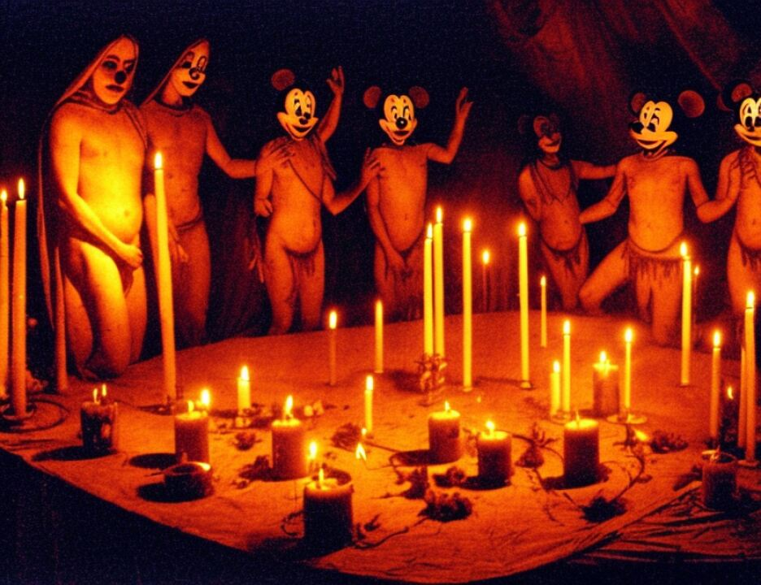

19 However, the Saudi regime did not like this and started to
20 exercise pressure on the Sudanese regime. The US government,
21 the Egyptian government and the Yemeni government also helped
22 in doing so. They requested me explicitly from the Sudanese
23 regime and the pressure continued. Saudi Arabia dropped all
24 its conditions put to the Sudanese regime in return that I be
25 driven out of the Sudan. The US government had already taken
5336
1 the same stance and pulled out its diplomatic mission from
2 chart to Nairobi and put forth their condition to return only
3 after I have left.
4 You know that Bin Laden had the headquarters in Sudan
5 up until some point in 1996 when he goes to Afghanistan and
6 issues the declaration of jihad. What he tells you in this
7 statement on CNN is that he blames the US government for
8 putting pressure on the Sudanese for driving him out of the
9 Sudan and into Afghanistan. He takes note of the fact that
10 part of the pressure was by removing the diplomatic presence
11 from Khartoum and sending it to Nairobi. In March of 1997,
12 Bin Laden is keenly aware of that move by the United States,
13 and I submit to you it provides a powerful motive that Bin
14 Laden had to hit the American Embassy in Nairobi in August
15 1998, to get back to the United States for its diplomatic
16 pressure on the Sudan that caused him to have to go to
17 Afghanistan.
18 On page 6, Bin Laden is asked about some attacks in
19 Riyadh and in Al Khobar. He says as to the previous question,
20 the explosion in Riyadh and Al Khobar, it is no secret that I
21 was not in Saudi Arabia, but I have great respect for the
22 people who did this action. I say, as I said before, they are
23 heroes. We look upon them as men who wanted to raise the flag
24 of -- there is no God but Allah and to bring the flag of
25 nonbelievers and of injustice that the US brought. So he is
5337
1 lauding the efforts of some other people who participated in,
2 as he calls it, the explosion of Riyadh and Al Khobar. He is
3 not taking credit for it. He is saying I didn't do it but I
4 applaud what they did for the reasons that you should know,
5 that the Americans should be driven out.
6 At the bottom of that page is a very brief reference
7 again to Sheik Omar Abdel Rahman. You remember, he is the
8 person that Bin Laden talks about in his August 1996
9 declaration of jihad where he blames the American government
10 for the arrest, something that the witness al Fadl told you,
11 well before Bin Laden gave this interview.
12 Then, ladies and gentlemen, on page 7, down at the
13 bottom, Bin Laden is asked about Somalia. Bin Laden says the
14 US government went there with great jubilation and stayed
15 there sometime with a strong media presence, wanting to
16 frighten people that it is the greatest power on earth. It
17 went there with vanity and 28,000 soldiers to a poor unarmed
18 people in Somalia. The goal was to scare the Muslim world and
19 the whole world to say that it is able to do whatever it
20 wishes. As soon as they reached the Mogadishu beaches, they
21 found no one but children. The CNN and other media started
22 photographing them, the soldiers, with their tanks and heavy
23 arms, and show themselves as the great power on earth.
24 Resistance started because Muslims did not believe the US
25 allegations that they came to save the Somalis.
5338
1 Continuing on the next page, with Allah's grace,
2 Muslims over there, there was a faction from the Islamic
3 alliance that emerged and cooperated with some Mujahideen who
4 were in Afghanistan. They participated with their brothers
5 against the American troops and killed large numbers of them.
6 The American government was aware of that. After some
7 resistance, the American troops left without achieving
8 anything.
9 Down below, Bin Laden tells the world what he
10 believed from Somalia. We learned from those who fought there
11 that they were surprised to see how low the spiritual morale
12 of the American fighters was compared with the spirit of the
13 Russian fighters. The American fighters ran away from the
14 fighters who fought and killed them.
2